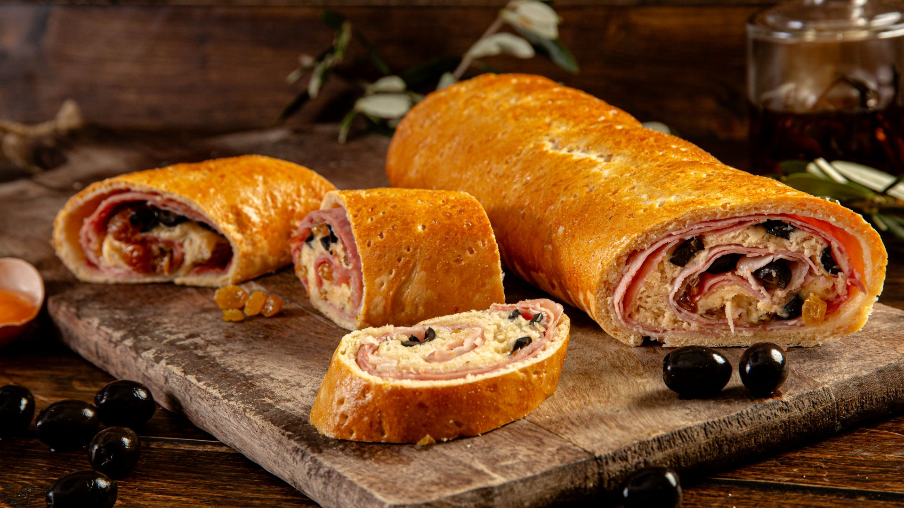

Pan de Jamón (Venezuela)
Ingredientes
Massa
- 500 g de farinha de trigo
- 50 g de açúcar
- 10 g de fermento biológico seco
- 1 colher (chá) de sal
- 50 g de manteiga em temperatura ambiente
- 1 ovo
- 250 ml de leite morno
Recheio
- 300 g de presunto cozido fatiado
- 150 g de bacon em tiras finas (frito e escorrido)
- 100 g de uvas-passas
- 100 g de azeitonas verdes recheadas com pimentão (inteiras ou picadas)
Finalização
- 1 ovo batido para pincelar
- Mel (opcional, para dar brilho após assar)
Modo de Preparo
- Em uma tigela, misture o leite morno, o fermento e o açúcar. Deixe descansar por 5 minutos, até
espumar.
- Adicione o ovo, a manteiga e o sal. Misture bem.
- Acrescente a farinha aos poucos até formar uma massa macia.
- Sove por 8–10 minutos, até ficar lisa. Cubra e deixe descansar por 1 hora.
- Abra a massa em um retângulo grande (cerca de 40×30 cm).
- Cubra toda a superfície com as fatias de presunto.
- Espalhe o bacon frito, as uvas-passas e as azeitonas uniformemente.
- Enrole a massa como um rocambole, apertando levemente para firmar o recheio. Feche bem as pontas e
coloque em uma assadeira untada.
- Faça pequenos furinhos com um garfo para liberar o vapor. Cubra e deixe descansar por mais 20–30
minutos.
- Pincele com ovo batido e leve ao forno pré-aquecido a 180°C por 35–45 minutos, até dourar.
- Ao sair do forno, pincele levemente com mel para um brilho tradicional.
 2h
•
2h
•
 Serve 12 pessoas
•
Serve 12 pessoas
•
 Médio
Médio